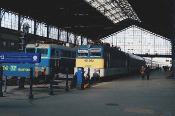

← Anterior
Zeitangaben & Datum
Siguiente →
Stadt, Wege & ÖPNV

El alemán arma palabras largas con piezas que ya conoces: krank + Haus = hospital. Si reconoces las piezas y las terminaciones, entiendes palabras que nunca has visto y aciertas su artículo.
| Palabra | Piezas | Español |
|---|---|---|
| das Krankenhaus | krank + Haus | el hospital |
| der Handschuh | Hand + Schuh | el guante |
| der Kühlschrank | kühl + Schrank | el refrigerador |
| die Straßenbahn | Straße + n + Bahn | el tranvía |
| der Arbeitsplatz | Arbeit + s + Platz | el puesto de trabajo |
| die Geburtstagsfeier | Geburtstag + s + Feier | la fiesta de cumpleaños |
| das Fahrrad | fahren + Rad | la bicicleta |
| die Hausaufgabe | Haus + Aufgabe | la tarea |
| der Führerschein | Führer + Schein | la licencia de manejo |
| die Kreditkarte | Kredit + Karte | la tarjeta de crédito |
| das Wörterbuch | Wörter + Buch | el diccionario |
| die Fahrzeugtechnik | Fahrzeug + Technik | la ingeniería automotriz |
| Terminación | Artículo | Ejemplos |
|---|---|---|
| -ung | die | die Wohnung, die Zeitung, die Rechnung |
| -heit / -keit | die | die Gesundheit, die Möglichkeit |
| -schaft | die | die Freundschaft, die Mannschaft |
| -ion | die | die Information, die Region |
| -tät | die | die Universität, die Qualität |
| -in (mujeres) | die | die Lehrerin, die Ingenieurin |
| -er (personas, aparatos) | casi siempre der | der Lehrer, der Computer |
| -ling | der | der Frühling, der Schmetterling |
| -ismus | der | der Tourismus |
| -chen / -lein | das | das Mädchen, das Brötchen |
| -ment / -um | das | das Dokument, das Zentrum |
| De | A | Español |
|---|---|---|
| wohnen | die Wohnung | vivir → la vivienda |
| rechnen | die Rechnung | calcular → la cuenta |
| anmelden | die Anmeldung | registrarse → el registro |
| gesund | die Gesundheit | sano → la salud |
| möglich | die Möglichkeit | posible → la posibilidad |
| freundlich | die Freundlichkeit | amable → la amabilidad |
| essen | das Essen | comer → la comida (el infinitivo como sustantivo es das) |
| fahren | der Fahrer / die Fahrerin | manejar → el conductor, la conductora |
| Pieza | Significado | Ejemplos |
|---|---|---|
| un- | lo contrario | unmöglich, unfreundlich, unzufrieden |
| -los | sin | arbeitslos, kostenlos, hilflos |
| -bar | que se puede | machbar, essbar, erreichbar |
| -ig | que tiene | sonnig, windig, lustig |
| -lich | relacionado con | freundlich, beruflich, täglich |
| -isch | origen o estilo | mexikanisch, typisch, praktisch |
| -voll | lleno de | wertvoll, sinnvoll |